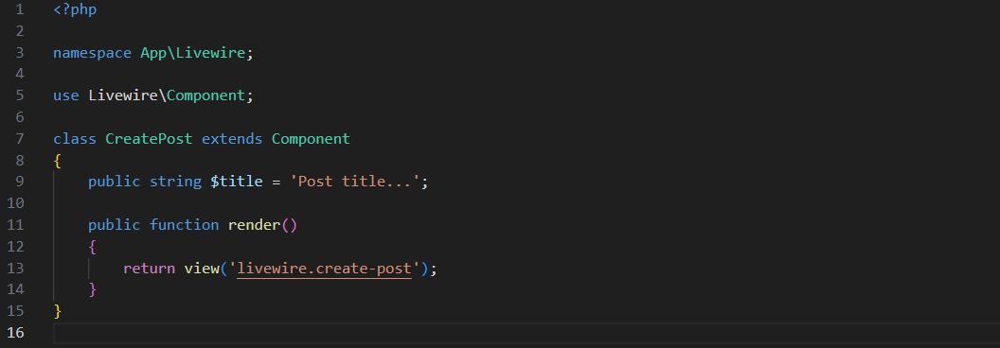
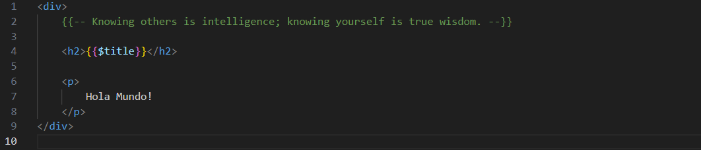
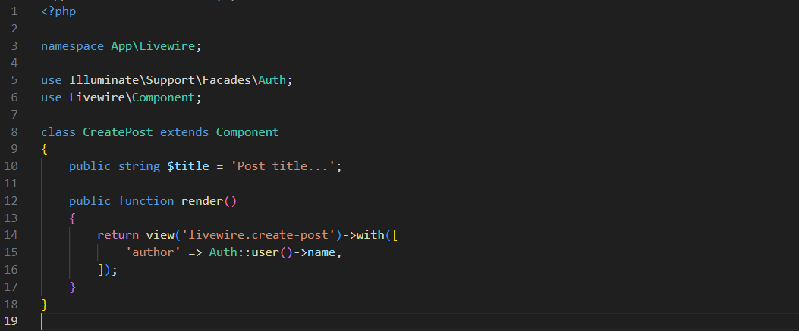
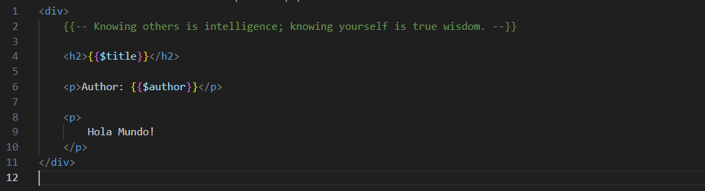
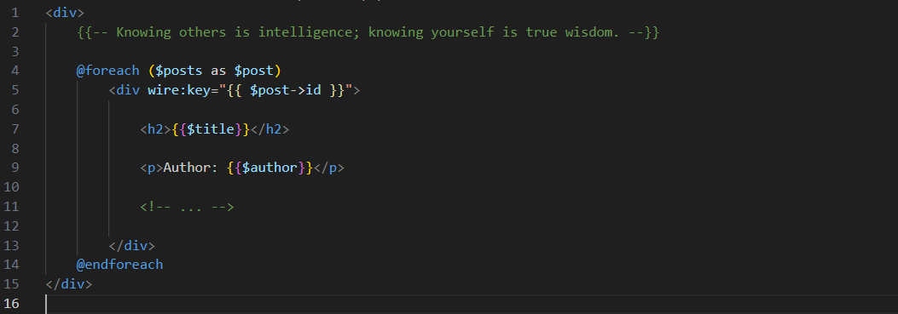
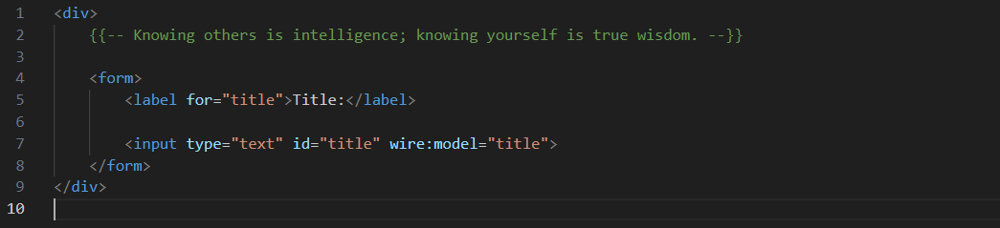

Los componentes Livewire tienen propiedades que almacenan datos y se puede acceder a ellas fácilmente desde la clase del componente y la vista Blade. Esta sección analiza los conceptos básicos para agregar una propiedad a un componente y usarlo en tu aplicación.
Para agregar una propiedad a un componente Livewire, declara una propiedad pública en la clase del componente. Por ejemplo, creemos una propiedad $title en el componente CreatePost:
Las propiedades del componente se ponen automáticamente a disposición de la vista Blade. Puedes hacer referencia a ellas utilizando la sintaxis estándar de Blade. Aquí mostraremos el valor de la propiedad $title:
Además de acceder a las propiedades desde la vista, puedes pasar datos explícitamente a la vista desde el método render(), como lo harias normalmente desde un controlador. Esto puede resultar útil cuando desea pasar datos adicionales sin almacenarlos primero como una propiedad, porque las propiedades tienen implicaciones específicas de rendimiento y seguridad.
Para pasar datos a la vista en el método render(), puedes usar el método with() en la instancia de la vista. Por ejemplo, digamos que deseas pasar el nombre del autor de la publicación a la vista. En este caso, el autor de la publicación es el usuario actualmente autenticado:
Ahora puedes acceder a la propiedad $author en la vista Blade:
Al iterara sobre datos en una plantilla Livewire usando @foreach, debes agregar un atributo único wire:key al elemento raíz representado por el bucle.
Sin un atributo wire:key presente dentro de un bucle Blade, Livewire no podrá hacer coincidir correctamente los elementos antiguos con sus nuevas posiciones cuando el bucle cambie. Esto puede causar muchos problemas difíciles de diagnosticar en tu aplicación.
Por ejemplo, si estas iterando sobre un array de posts, debes establecer el ID del post en el atributo wire:key:
Una de las características más poderosas de Livewire es el "enlace de datos": la capacidad de mantener automáticamente las propiedades sincronizadas con las entradas del formulario en la página.
Vamos a enlazar la propiedad $title del componente CreatePost a un input tipo texto usando la directiva wire:model
Cualquier cambio que hagas en el input será automaticamente sincronizado con la propiedad $title en tu componente de Livewire. Las propiedades Livewire son extremadamente poderosas y un importante concepto a entender.